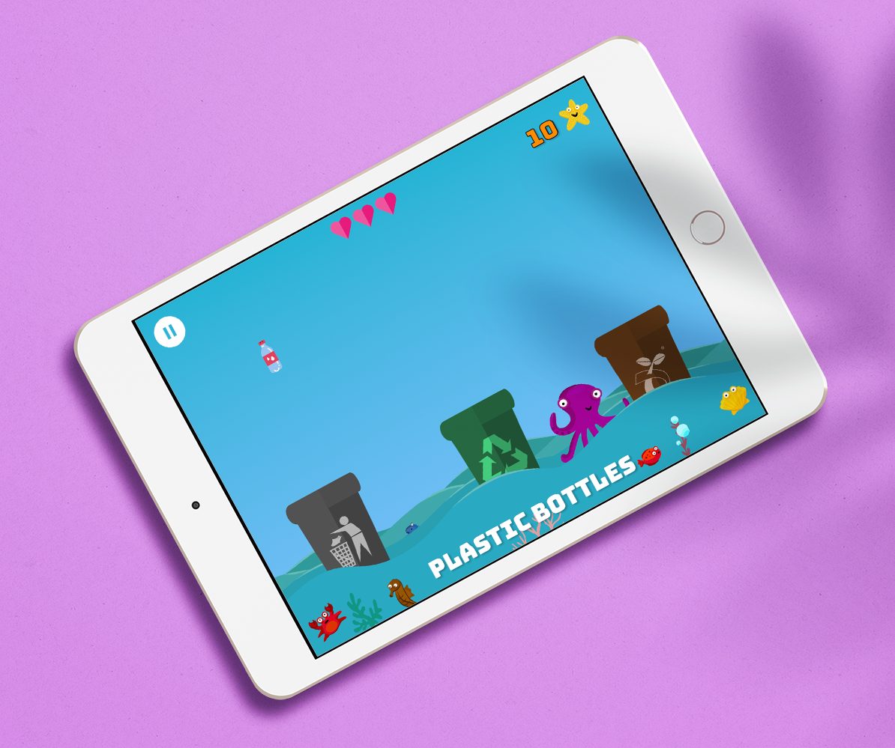
Reduce, Reuse, Recycle!
Tablet-first drag and drop game to teach 3-6 year-olds about recycling.
Tech Stack: React, React Router, Drag and Drop Container Library, Travis CI, Codecov, Jest, React Testing Library, Styled Components, SVGs, CSS animations, Progressive Web App
This was a joy of a project. Usability testing helped us validate many assumptions and drove us to build tablet-first. We used a drag and drop library which worked with touch events. It was great to be able to achieve some of our stretch goals around animating SVGs, adding UI sound effects to improve the user experience, and, excitingly, turning this into a Progressive Web App.
Role: QA lead, developer, designer
Code on Github | Figma Prototype | Live Site
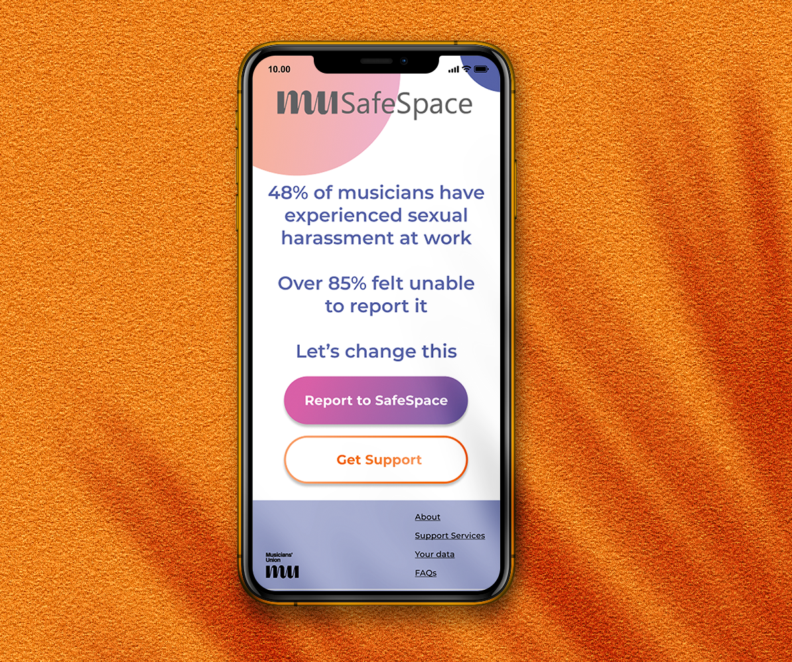
Safe Space
A site built for the Musicians' Union, to enable reporting of sexual harassment within the music industry.
Tech Stack: React, React Router, AirTable, Netlify Lambda Functions, Travis CI, Codecov, Jest, React Testing Library, Cypress, React Material Web Component Library, Styled Components
Still in Build phase - description to come soon!
Role: UX/UI lead, developer, designer
Code on Github | Figma Prototype | Live Site
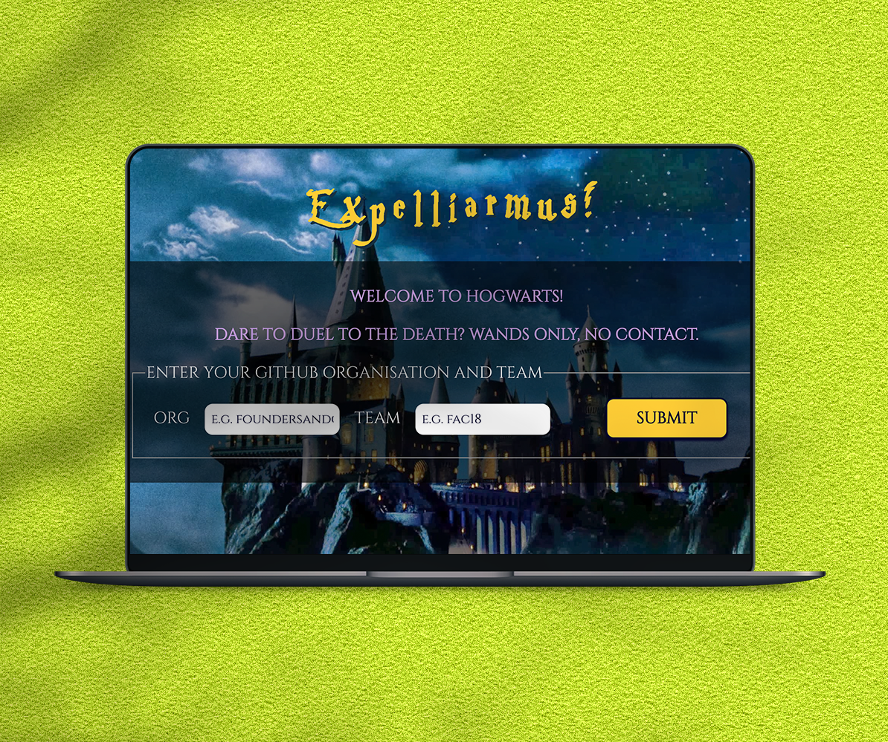
Expelliarmus
A Street Fighter style Harry Potter spell-casting game built using React JS in 2 days
Format: Pair-programming
Code on Github | Live Site
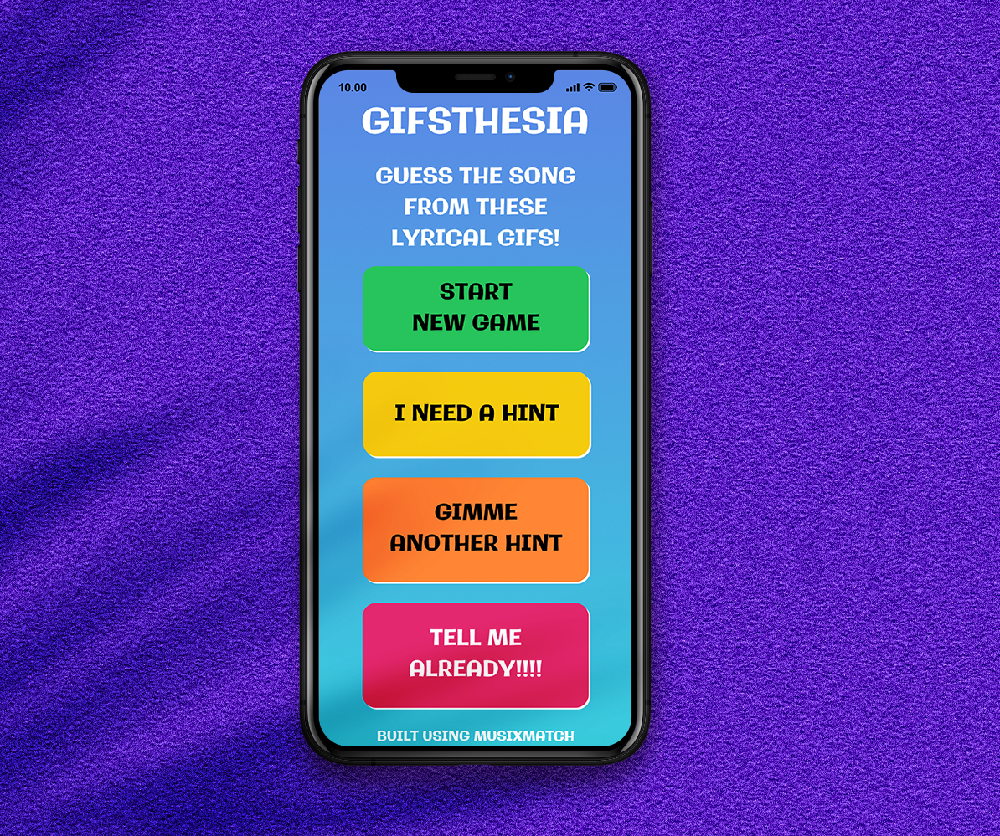
Gifsthesia
When we hear lyrics, we see Gifs. A game using the MusixMatch and Giphy APIs
Format: Pair-programming, mobbing
Code on Github | Site Link to come


 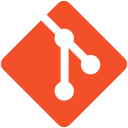
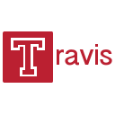
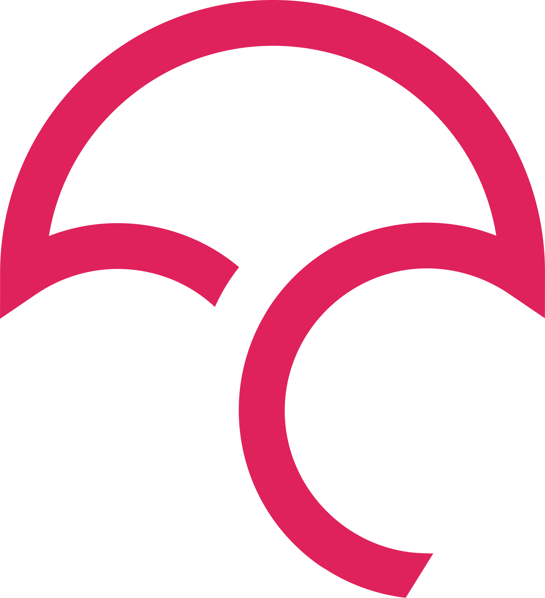
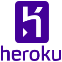
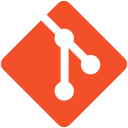
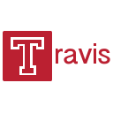
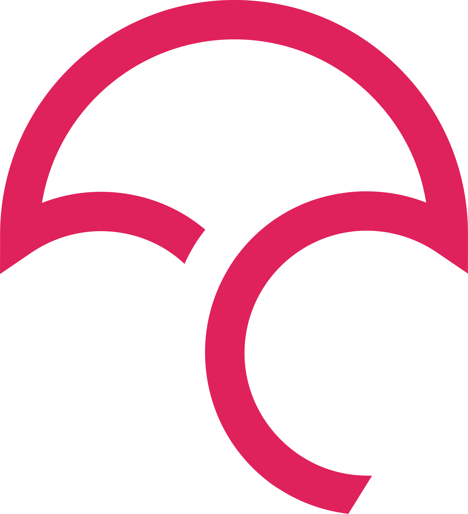
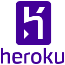